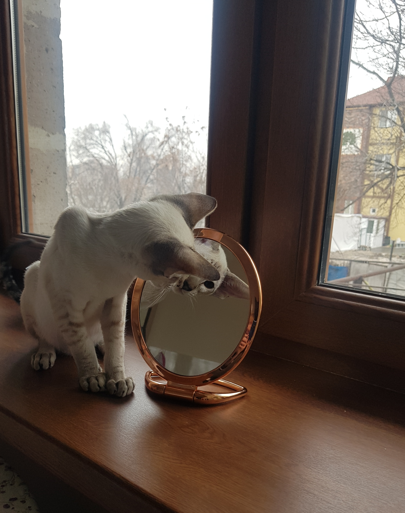
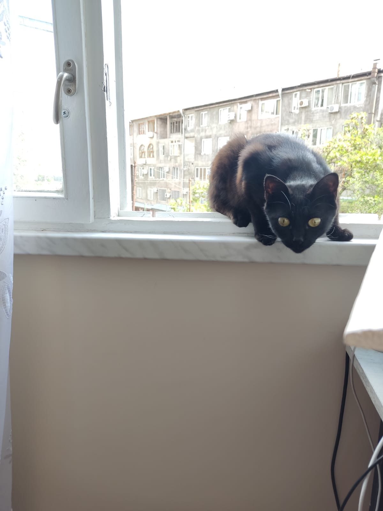
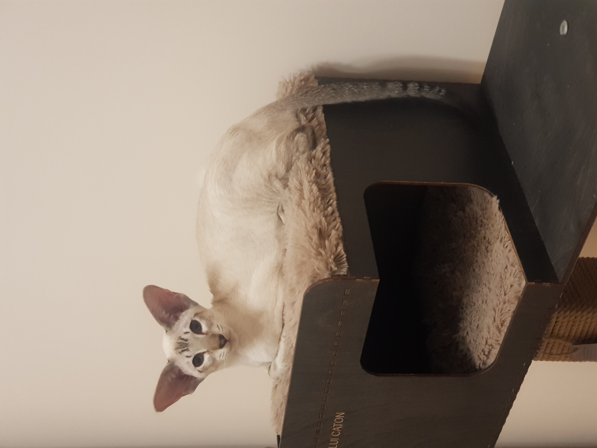

Красавчик котик.
Красавчик котик хоть куда
Будить он любит по утрам.
Зачем ему игрушки,
Коль есть такие сплюшки!
Лежат они в постели
Тыг-дыг, тыг-дыг, парам-парам!
Я спать вам ни за что не дам!
А ну, вставайте люди!
Не то вам хуже будет!
Могу я делать кусь и этим я горжусь!
А так же громко петь и бегать и шуметь!
Кусь-мур-мя, кусь-кусь, мур-мя!
Спасите же кота, меня кормить пора!

В гости заходила.
В гости заходила дамочка с хвостом,
Та, что во дворе у нас живёт уже давно.
Лапкой мимоходом Джастина толкнула,
И задравши хвостик мимо прошмыгнула.
Джастин от испуга стал кричать дурниной:
Дружба не сложилась с этой дамой милой.
Под кроватью долго кот сидел обиженный,
Мне, по морде лапой, где же это виданно!

Зачем меня хорошего.
Зачем меня хорошего на улицу водили?
Зачем меня красивого в ошейник посадили?!
Я котик, котик, котик, я точно не собака!
Мне нужно на кроватке лежать и наслаждаться!
Какие там деревья, какая там трава?
Не нужно так, прошу я вас, пугать меня-кота!
Вот если был собакой я, тогда другое дело!
Ходил бы я по улицам довольно таки смело!
И был бы самым важным псом среди дворовых псов.
А так я просто котик, гроза других котов!
Открыл глаза и сразу понял.
Открыл глаза и сразу понял,
Что мне давно играть пора.
Хочу, что б кто-то мячик бросил,
Быстрее бросил для меня!
Ну, даже если и не бросит,
То это просто ерунда.
Сейчас поймаю свою мышку,
И подарю её друзьям.
Я знаю точно, что я лучший
В вопросе поиска мышей
Одну я спрятал под диваном,
Искать что б было веселей
За холодильником другая
Давненько ждет меня с тоской
Когда нибудь ее поймаю
И все узнают-я герой!

Я счастливый котик.
Я счастливый котик, ведь у меня есть норка
У меня есть норка, где я люблю поспать
А норка это домик, мой любимый домик
И еще там можно здорово играть
Домик на колоннах, на больших и прочных
На таких массивных, что я могу скакать
В домик или в норку и потом обратно
Выскочить внезапно, что бы мяч поймать.
Можно мышку в норку принести под вечер, положить под коврик,
С ней ведь лучше спать
Ну, а утром снова выпрыгнуть наружу
Пригласив с собою мышку поиграть.

Люблю, когда в дом приносят цветы.
Люблю, когда в дом приносят цветы
Цветы никогда не молчат
Как только меня увидят они
То с радостью мне говорят:
Какой ты прекрасный и умный кот!
Ты Джастин само совершенство
Понюхай как пахнем мы хорошо
Нам очень с тобой интересно!
И лапкой нас можешь потрогать слегка
Поймешь, как нежны мы бываем
Мы любим котов везде и всегда
И очень тебя уважаем!
На улицу вновь понесли меня.
На улицу вновь понесли меня
В рюкзак с окном затолкав загодя
И глядя на кошку, что рядом идёт
Кричу ей, я славный и классный кот!
Я лучше других в догонялки играю
И мышки домашние дружат со мной
Спаси же меня, я тебя умоляю,
Я очень хочу вернуться домой
Мне чужд этот мир, где густые кусты
И звуки пугают со всех сторон
Поговори, с моими людьми
Вруг голос услышат они хоть твой!